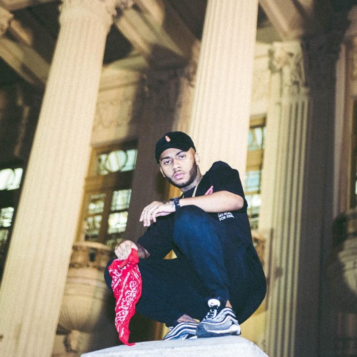

Clique aqui e ouça a música em nosso player
É melhor que você entenda, ‘Balão’ é mais que um simples trap
No dia 25 de março, o rapper Orochi lançou seu novo single ‘Balão’, que faz parte do seu primeiro EP como artista solo,
‘Real Freestyle’. A música teve repercussão imediata, por aparentar ser uma ‘diss’, conceito da cultura do hip-hop que
representa uma música em resposta a alguma pessoa.
Se formos seguir esta teoria, precisaríamos voltar mais precisamente para o dia 18 de março, data marcante para o
sucesso do hit.
O início
Uma semana antes de soltar ‘Balão’, Orochi foi preso, durante a madrugada, a caminho de um show em São Pedro da Aldeia. A polícia alegou, que além de ter encontrado maconha no carro, o rapper teria desacatado os oficiais da PM, sendo assim encaminhado para a delegacia da região.
A notícia chegou rapidamente aos veículos de grande mídia que informaram a prisão do cantor. Erroneamente, o jornal carioca ‘O Dia’ veiculou que um dos motivos da detenção teria sido a presença de uma arma no veículo do músico.
A informação foi corrigida pelos editores, contudo, Orochi já tinha tido sua imagem comparada a de um traficante, manchando sua reputação.
Após ser liberado da delegacia, o cantor e seus representantes procuraram auxilio jurídico para processar os jornais, que segundo Orochi propagaram calúnias sobre sua vida pessoal.
Aquele jovem negro vingou
Não, eu não quero cravar a faixa de Orochi como o melhor som do ano. Longe de mim, fazer isso. Ainda estamos em abril,
seria algo tremendamente precoce para um cenário que pode mudar a qualquer momento. O que busco ao escrever esse artigo
é muito mais do que dissecar a música e mostrar o que o rapper quis dizer em cada verso.
A letra da faixa é muito impactante, contudo, Orochi soube aproveitar do hype de sua prisão para bombar o lançamento.
Ele lançou a música apenas uma semana após o ocorrido na Região dos Lagos. O rapper mostrou novamente saber como
comercializar um som, desta vez, usando-o como uma resposta para a prisão.
Hoje, Orochi é um nome que vai aos poucos se consagrando na cena do rap. Antigamente conhecido apenas por seu trabalho
nas batalhas de rima em São Gonçalo, o músico pode se orgulhar de sua trajetória. Com seu grupo MODE$TIA, o antigo
ModestiaParte, em um momento de pausa, o rapper vai aproveitando cada vez mais para fincar sua posição dentro do
cenário.
Em outro verso de ‘Juízo Final’, o cantor reafirma que sua principal missão é furar a bolha, jogando o gênero em outra
realidade, atingindo um público que não escuta o rap. Após o sucesso de participações em músicas como ‘Meu Mundo’ e
‘Poesia Acústica’, ele mostrou que isso É possível.
A crítica de Orochi ao sistema já rendeu mais de 100 milhões de visualizações em seu canal no Youtube. Foi de longe, uma das faixas de rap mais ouvida de 2019, e que com certeza, marcou de vez seu lugar na cena do rap. Ouça acima em nosso player